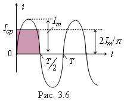

Так как среднее значение гармонического тока i(t) = Im sinωt за период T равно нулю, то под средним значением синусоидального тока i(t) понимают среднее в интервале времени T/2 (рис. 3.6), т. е.
| |
(3.6) |
|  | Таким образом, среднее значение синусоидального тока Icp равно его амплитудному значению Im умноженному на 2/p. Аналогично определяют средние значения гармонического напряжения и ЭДС: |